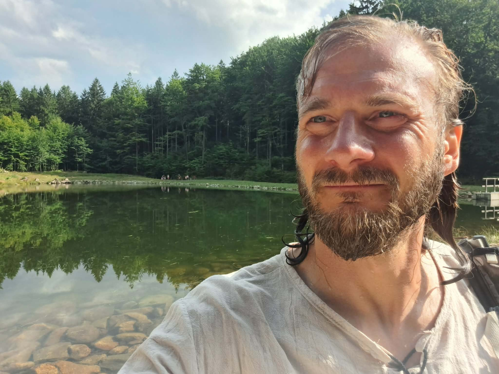
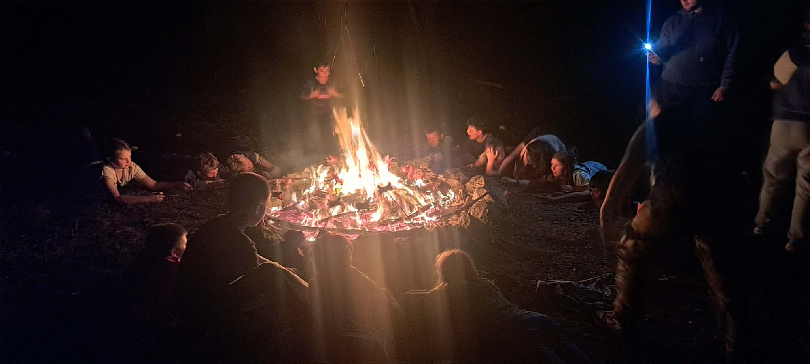
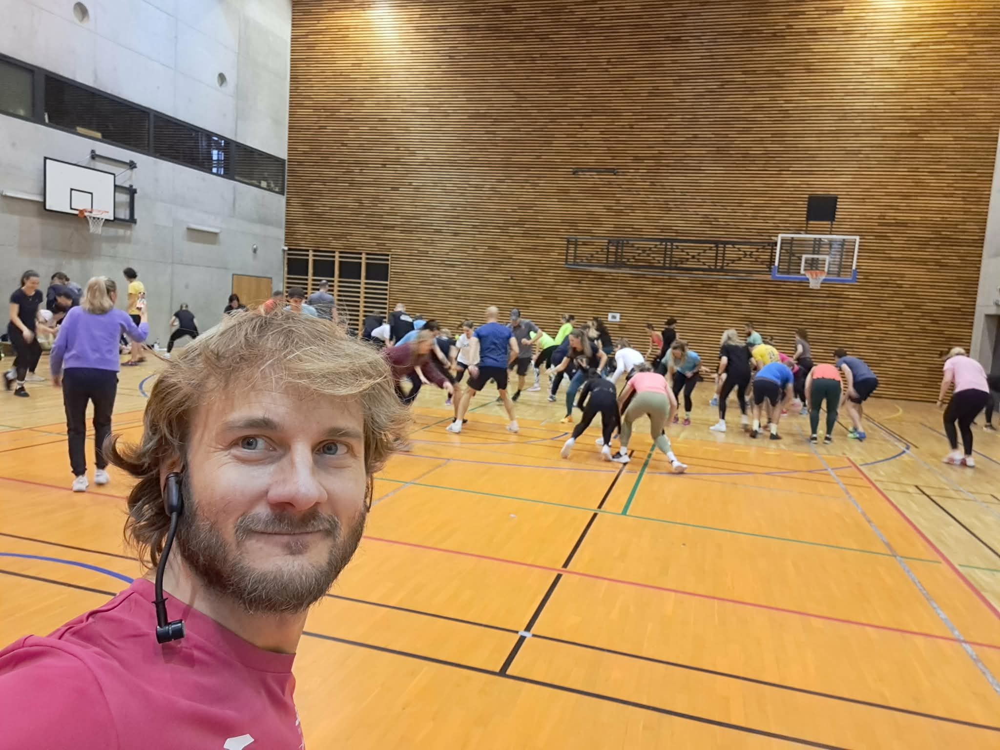
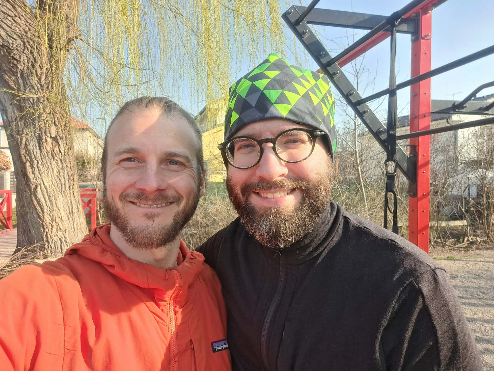
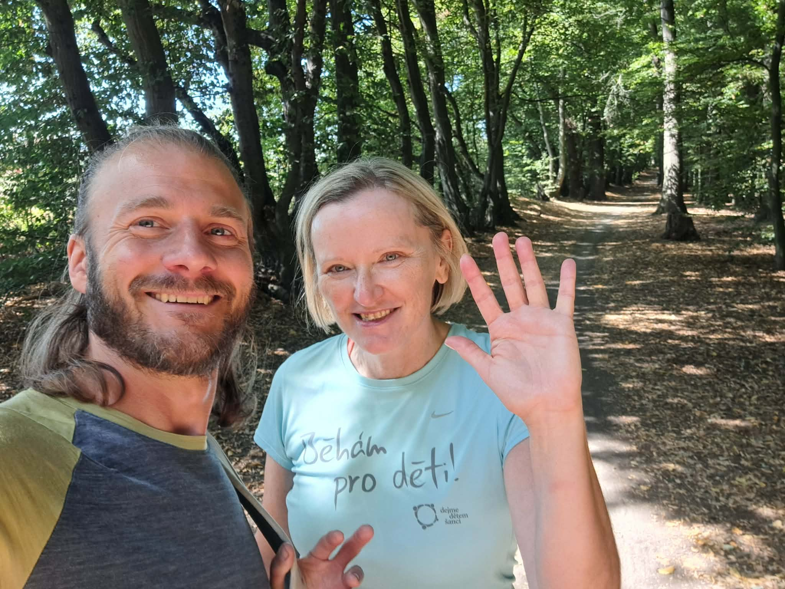

Jan Novosad
Odpovědi na život si neseme každý v sobě, ale načítají se pouze v pocitu bezpečí.
Držím prostor pro zpomalení, pohyb, naslouchání a návrat do těla. Tam, kde se nervový systém může uvolnit, se znovu objevuje jasnost, síla, rytmus a přirozená odpověď.
O mně

Jsem muž, partner a otec dvou dcer. Mou životní cestu až do čtyřiceti doprovázel především pocit viny z minulosti a strach z budoucnosti. Toto vnitřní nastavení mě dovedlo až na hranici možností mého těla.
Chyběla mi stabilita a jasnost. V roli hodného kluka na všechny strany jsem se potácel životem ode zdi ke zdi. Až kolem čtyřicátých narozenin jsem dostal od života jasný vzkaz skrze nemoc: pokud nezačnu žít podle sebe, nemusím tu dlouho být.
Byl to dar, který mi přinesl jednoduchost a vděčnost za obyčejné věci, otupil velký strach z konečnosti a dovolil mi znovu začít ve stejném těle. Učím se dělat věci, tvořit příležitosti a řešit situace v první řadě podle sebe a podle odpovědnosti za sebe a svou rodinu.
Učím se, co to znamená být v tomto světě muž, partner, otec, syn a bratr. A také hajzl, sobec, rebel, hlupák, šašek, bojovník i král.
Největším hybatelem a inspirací je pro mě má partnerka, matka mých dcer, Gabriela. A v druhé vlně obě dcery. Všechny tři jsou pro mě zrcadlem mých pocitů nedostatečnosti, nejasnosti mého směřování — a já se učím být vděčný i za určitou surovost a krutost, kterou mi to dávají najevo. Díky nim se potkávám se svými strachy a démony, a tím v sobě probouzím odvahu a odpovědnost.
Vystudoval jsem FTVS UK – obor trenérství. Od dokončení studia jsem začal skutečně studovat to, co mi dávalo smysl a doplňovalo prázdná místa chápání: pohyb, psychosomatiku, reflexní terapii, TČM, funkční trénink, přirozený pohyb MovNat, dech (Oxygen Advantage), principy Cchi-kung, šamanský přístup skrze fyzickou práci, vibraci, zvuk, stravu, rytmus a přírodní medicínu.
Jak pracuji
Nepoužívám metody. Pracuji skrze přítomnost, intuici, vlastní zkušenost a zkušenosti klientů.
Sdílím principy, které vycházejí z biomechanické, energetické a duchovní podstaty člověka. Klient má možnost následovat, zkoumat a ověřovat vše skrze vlastní prožitek. V bezpečí nervového systému se mohou spouštět samouzdravné procesy na úrovni těla i duše.
1. Individuální setkávání
Prostor pro zpomalení, pohyb, dech, naslouchání, práci s emocemi, vibrací a vnímáním sebe. Cílem není výkon, ale návrat k pocitu bezpečí, vnitřnímu rytmu a schopnosti cítit, co je teď pravdivé.
- regulace nervového systému
- uvolnění těla a napětí
- vnímání signálů těla
- jasnější rozhodování a větší stabilita
2. Vedení skupin pohybem
Skupinový pohyb jako cesta k přítomnosti, síle, stabilitě, koordinaci a radosti z těla. Prostor, kde se pracuje s přirozeným pohybem, rytmem, uvolněním a vnímáním.
- skupiny v interiéru i venku
- vlastní tělo, jednoduché pomůcky, TRX
- pohyb jako nástroj sebepoznání
3. Facilitace kruhové komunikace
Transparentní kruhová komunikace jako bezpečný formát sdílení, naslouchání a setkání v pravdivosti.
- otevřené skupiny
- mužsko-ženské kruhy
- kruhy pro dospívající
- sportovní týmy
- pracovní týmy
4. Pohybové konzultace pro sportovní týmy
Efektivita a funkčnost pohybu, koordinace, stabilita, mobilita, sebe-péče a osobní odpovědnost za přípravu těla i mysli.
- kvalita pohybového vzorce
- mobilita a stabilita
- koordinace a ekonomika pohybu
- regenerace a příprava nervového systému
5. Interaktivní přednášky a diskuse
Nerad někomu tlačím svá moudra. Sdílím spíš příběh, zkušenost a principy, které otevírají prostor, aby se člověk mohl v bezpečí dotknout vlastní pravdivosti.
- diskuse a sdílení
- interaktivní přednášky
- workshopy na míru
- formát podle konkrétní skupiny a záměru setkání
Prostor, pohyb, setkání
Ukázky z prostředí, ve kterém se potkáváme – v pohybu, v přírodě, v kruhu i v živém sdílení.



Kde působím
Osobně Praha a okolí, online i v prostoru, který dává smysl konkrétnímu setkání.
WhatsApp propojení do skupin na kruhy (mužsko-ženské / pro dospívající / smíšené) můžeme doplnit později formou QR kódů — do této verze jsem připravil místo, ale zatím bez konkrétních kódů.
5 elementů – rytmus těla, přírody a života
To, co dělám, lze číst i skrze dynamiku pěti elementů. Každý nese kvalitu pohybu, psychiky, orgánů, ročního období i způsobu, jakým se vztahujeme sami k sobě.
Zvuk a rytmus
Zvuk je pro mě most mezi tělem, emocí a prostorem. Ne jako efekt. Ale jako připomínka rytmu, dechu a živosti.
V4 – vlčí vytí / atmosférický placeholder
Tato verze obsahuje připravené tlačítko pro zvukové podbarvení. Aktuálně je nastaveno jako placeholder. Později sem můžeme vložit reálný soubor, např. wolf.mp3 nebo kombinaci jemných přírodních vrstev.
Inspirace: šamanská tradice, Zvuk Slunce (un-tsun), zvuky zvířat, vibrace hlasu, rytmus dechu, ticho mezi zvuky.
Reference klientů
Text recenzí je záměrně menší, aby působil klidněji a nechal vyniknout celkové struktuře stránky.

MPMatěj P.
dlouhodobá individuální spolupráce
„Honza Novosad je pro mne unikátní člověk. Je výborný trenér pohybu. Už přes 5 let s ním cvičím a svět se mi zlepšil po všech stránkách. Cítím se výrazně fyzicky lépe. Mám radost z pohybu a jsem daleko více vědomý při něm. Cvičíme vlastním tělem, uvolňujeme tělo, používáme TRX i venkovní posilovnu v naší obci. Honza je však i skvělý člověk a tak trochu šaman. Věřím, že to o něm i spousta lidí neví. Když jsme spolu začali cvičit, mluvili jsme primárně o pohybu. Ale když viděl, že mám zájem i o duševní stránku, začali jsme toho probírat více. Debaty s ním mi často pomáhají utřídit myšlenky a i při tréninku dosáhnout lepších výsledků. Ještě zmíním jednu věc, která mi hodně v tréninku pomohla. V zásadě náhodou jsem zvolil délku tréninku hodinu a půl a jsem za to rád. Máme čas na kvalitní uvolnění, delší trénink, ale i přestávky na posílení koncentrace. Cvičím s Honzou dvakrát týdně a jsem ve svých 36 letech nejvíce fit, co jsem kdy byl a i sedavé zaměstnání mi nezpůsobuje větší problémy. Rád se sám každé ráno protahuji pomocí cvičení, které mne Honza naučil. Začít cvičit s Honzou bylo jedno z nejlepších životních rozhodnutí, které jsem udělal.“

IVIvana V.
individuální / online / příroda
„Honzu jsem oslovila v době, kdy dělal osobního trenéra ve fitku. Líbila se mi pozitivní energie, kterou vyzařuje a taky tolerance, se kterou přijímá moje věčné remcání a skučení. Zvládli jsme spolu Covid, nemoci, stresy a spoustu změn v nás i kolem nás. Z fitka jsme se přesunuli na online a do přírody, od posilování a podrobného tréninkového plánu k náplni setkání řídící se aktuální inspirací a pocity. Dokonce už mě dnes neděsí ani pokyn ‚představ si‘, s tím jsem měla dřív, jako silový typ, dost problém. Cíl je stále stejný, budovat a udržovat sílu, výdrž a flexibilitu, i když už je dnes možná vnímám jinak než před lety. Jsem vděčná za motivaci a podporu, které se mi dostává a doufám, že si mě Honza jako klienta nechá, i když to se mnou určitě nemá jednoduché. Jo, a posilování mám dneska za odměnu.“